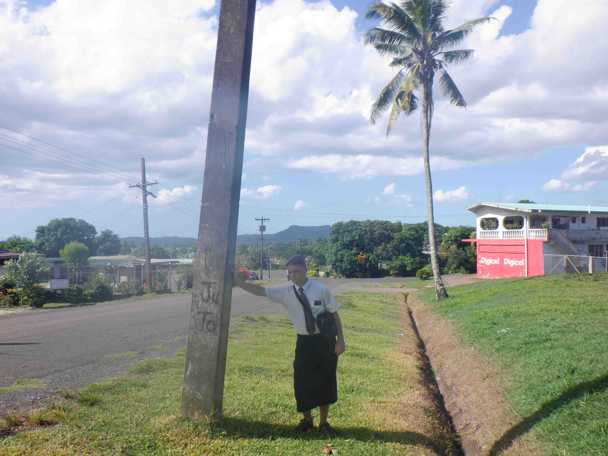
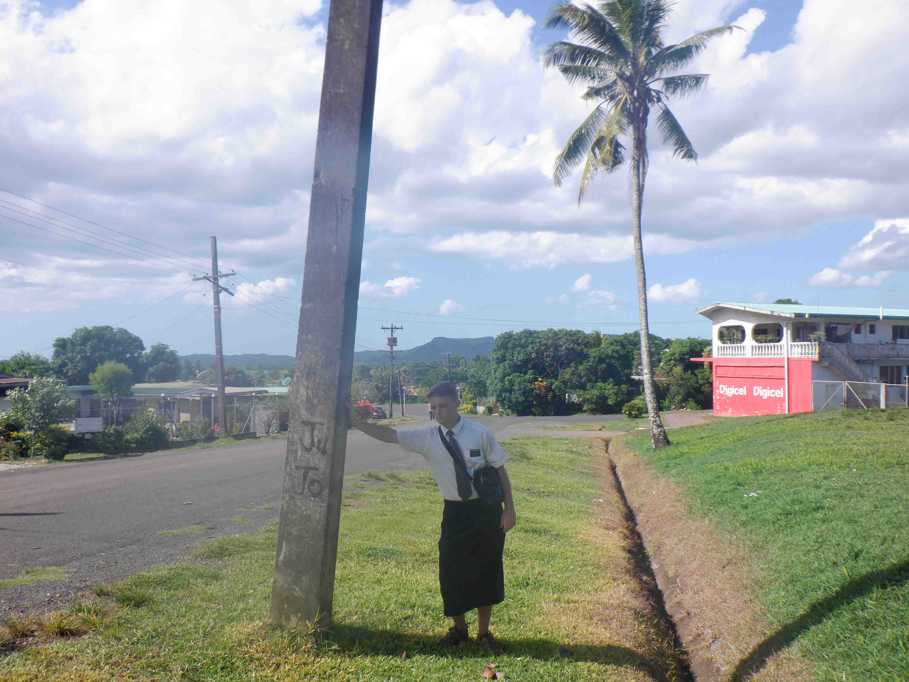

Areas and Pictures
Makoi


For the first five months of my time in Fiji, I lived in was called Makoi. It was in the north east section of Suva, the capitol of Fiji. This area spanned across a big hill, and we lived at the very bottom. I found it so beautiful how all of the houses and streets were built in the jungle, just as you can see in the pictures. One of my favorite places in the area was a village called Koro Vatu, which means city on a rock. In the picture on the right, you can see the village, and how all of the buildings are built on the same large rock surface.
Labasa
 

After leaving Makoi, I went to a town called Labasa which was on a different island. Makoi was on the biggest island in Fiji called Viti Levu, and Labasa was the largest town on the second biggest island- Vanua Levu. The town had a main road that went right through it that could take us to farmlands in both directions away from where we lived. The town was only about a mile long but there were houses and farms that stretched on for miles. The swingset was built over the main road a couple miles East of downtown, and the mountain can be seen from most places around town.
Tukavesi


Lastly, I spent about two weeks in a town called Tukavesi. I would have lived here longer, but I moved there in March of 2020 and once the pandemic spread around the world, I was evacuated back to the United States. Tukavesi was on the other side of the island from Labasa, and it was a small traditional village right against the ocean. We lived in a small house just like everyone else in the village, and we could see the ocean out our window. We had a truck and covered dozens of villages along the sea for about 50 miles. We had access to may beautiful beaches and views, and there were very few people in the whole section of the island that spoke english fluently.